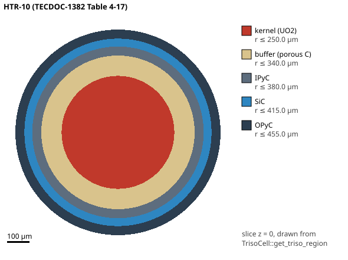

Why layers?
Fission products
Chapter 3 ended with a bare UO2 kernel letting its fission products out. Some of them are radioactive for years, some keep making heat after shutdown, and some (caesium, iodine) are chemically active and volatile. So we do not want one wall between them and the outside: we want several, so that no single failure lets them out. That idea is called defence in depth. A TRISO particle puts it inside one grain of sand.
Predict first. A bare kernel at 1600 °C lets out nearly all its iodine-131. How much less does a modern TRISO particle let out: ten times, a thousand, or a billion?
First try: carbon only (BISO)
The first coated particles were BISO: a porous carbon buffer and one dense pyrocarbon shell. In Fang et al.’s words (2021, p. 2): “In the initial design, the coated fuel particle structure is of Bi-isotropic (BISO) type, i.e., a loose and a dense pyrolytic carbon layer on the outer coating of the active core.”
Carbon holds gases well, but BISO showed two weaknesses: “the high level of heavy metal contamination during the coating deposition and the low retention ability for certain metal FPs (such as strontium)” (Fang et al. 2021, p. 2). Kugeler et al. (2017, p. 28) put it this way: BISO particles “are completely sufficient concerning fission-product release, however they are outperformed by the behaviour of TRISO-coated particles in case of hypothetical accident conditions, for example with core heat-up to temperatures > 1 500 °C.”
Source pending: the year and programme in which SiC was first added, and which particles Dragon, Peach Bottom and Fort St. Vrain used. None of the three open sources read here says.
Add SiC: BISO becomes TRISO
TRISO adds a silicon carbide layer between two pyrocarbon layers. Tap a layer in the panel to read its job, quoted from Kugeler et al.’s Table 5 (pp. 32–33). In short:
- Buffer (porous carbon): room for gas and CO, room for the kernel to swell, and a cushion against recoiling fragments.
- Inner PyC: holds gases, protects the kernel while the SiC is laid down, and gives the SiC something to grow on.
- SiC: the main barrier, which the report says retains everything except silver below 1250 °C in operation and up to 1600 °C in accidents, and the layer that carries the pressure.
- Outer PyC: holds gases, squeezes the SiC as it shrinks under irradiation, and bonds to the graphite around the particle.
The bars show the result. In 1600 °C heating tests, a bare kernel let out about all its 131I; TRISO fuel contaminated by older BISO fuel in the AVR reactor let out about 10−5; modern TRISO fuel 10−9 to 10−8, “nine orders of magnitude” apart (Kugeler et al. 2017, pp. 42–43).
Next: why does each layer hold some fission products and not others? Lesson 32 measures how fast each element moves in each layer.
Learn more advanced stuff
The same idea, at plant scale
A reactor plant stacks barriers too: fuel, cladding or coatings, the coolant boundary, the building. That comparison belongs to a later capstone chapter and is not drawn here. This chapter stays inside the TRISO particle.
Given a point, which layer is it in?
A random walk (lesson 34) moves an atom to a new point, and the code then needs that point’s layer to know how fast the atom diffuses there. boon-lay’s TrisoCell builds the particle as five nested spheres. It takes the distance from the centre, r = √(x²+y²+z²), and compares it with the five radii, innermost first; a point exactly on an interface belongs to the outer layer, within a tolerance of 1 pm for particles this size. Two lookups use that rule: get_ (“which layer?”) and try_ (“what is D here?”).
The workspace rule is that a geometry is drawn from what the solver sees, never from the constants that built it. The example triso_ colours every pixel of a slice by asking get_, and recovers each interface radius from the lookup alone, by bisection. Run 2026-10-04 (cargo run --release -p boon-lay --example triso_cell_slice): every interface of both particles was recovered at the stated radius less 10−3 nm, the lookup’s own tolerance (pass criterion 1 nm).

One particle, three descriptions
boon-lay describes the same particle in three ways, because each model needs a different amount of it, and detail a model does not use is only another place to be wrong:
- The random walk keeps all five spheres, each with its temperature and diffusion coefficient (
TrisoCell). - Fuel failure keeps only the SiC shell’s inner and outer radius, as a thin shell (
SicLayer, lessons 35–37). - TRISO-ATOPS keeps no layers at all: each group diffuses out of one equivalent sphere (lesson 18, chapter 5).
Where the theory book goes deeper
The fission-product transport theory book covers the layers and their chemistry, with what the workspace can and cannot support (step 3, “Through the layers”), and why SiC gets the credit (step 4). The TRISO-ATOPS demo’s particle rung draws the same lookup live; tap a layer to name it.
Sources
- Kugeler, K., Nabielek, H. & Buckthorpe, D. (2017), The High Temperature Gas-cooled Reactor: Safety considerations of the (V)HTR-Modul, EUR 28712 EN, JRC, doi:10.2760/270321 (open corpus).
- Fang, C. et al. (2021), “Analysis of Fission Products’ Release in Pebble-Bed HTGR Fuel Elements Using a Modified FRESCO II Numerical Model”, Science and Technology of Nuclear Installations, doi:10.1155/2021/6627789 (CC BY).